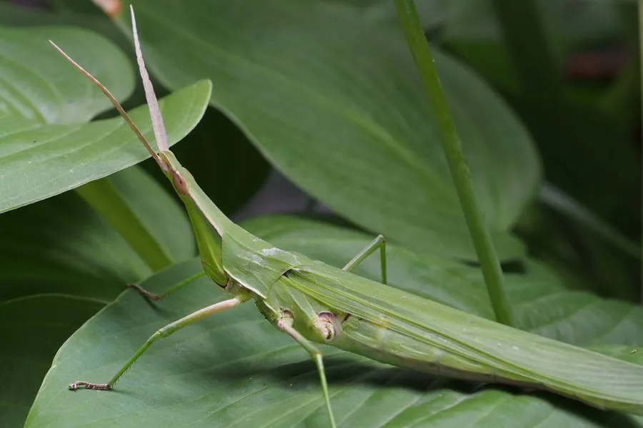

昆虫 · 动物界
中华蚱蜢 Acrida cinerea

头部尖长、身体细长的蚱蜢，体色草绿或枯黄，善跳跃，取食禾本科植物，是草地和农田中常见的昆虫。
- 分类
- 门节肢动物门纲昆虫纲目直翅目科蝗科属蚱蜢属
- 栖息环境
- 草地、农田、路旁和荒坡，取食禾本科植物
- 地理分布
- 中国大部分地区，以及日本、朝鲜半岛
- 保护级别
- 暂无评估
物种志
中华蚱蜢成虫体长约 5–8 cm，雌虫比雄虫大，身体细长，头部尖长呈圆锥形，触角短，后足腿节发达，善跳跃。体色多为草绿色或枯黄色，与周围环境相近，翅狭长，能飞行一段距离。
它生活在草地、农田、路旁和荒坡，取食禾本科植物的叶片，如狗尾草、稗草和农作物，有时也会取食豆科植物。中华蚱蜢一年发生一代，以卵块在土中越冬，成虫在夏秋季出现。它是中国大部分地区常见的蚱蜢，数量多时会对农作物造成一定危害，但一般不需要专门防治；在生态系统中，它是鸟类、蜥蜴和螳螂的食物，也是观察昆虫拟态和跳跃运动的好对象。
形态与习性
- 食性取食狗尾草、稗草等禾本科植物叶片
- 体长约 5–8 cm，雌虫较大
- 识别头部尖长呈圆锥形，体色草绿或枯黄
- 生活史一年发生一代，以卵块在土中越冬
- 分布中国大部分地区、日本和朝鲜半岛
趣味知识
- 中华蚱蜢的头又尖又长，像个小小的圆锥。
- 它后腿发达，受惊时能一下跳出很远。
- 中华蚱蜢的体色和草叶枯叶很像，是伪装高手。
生态关系
- 捕食 ← 广斧螳 螳螂伏击蝗虫